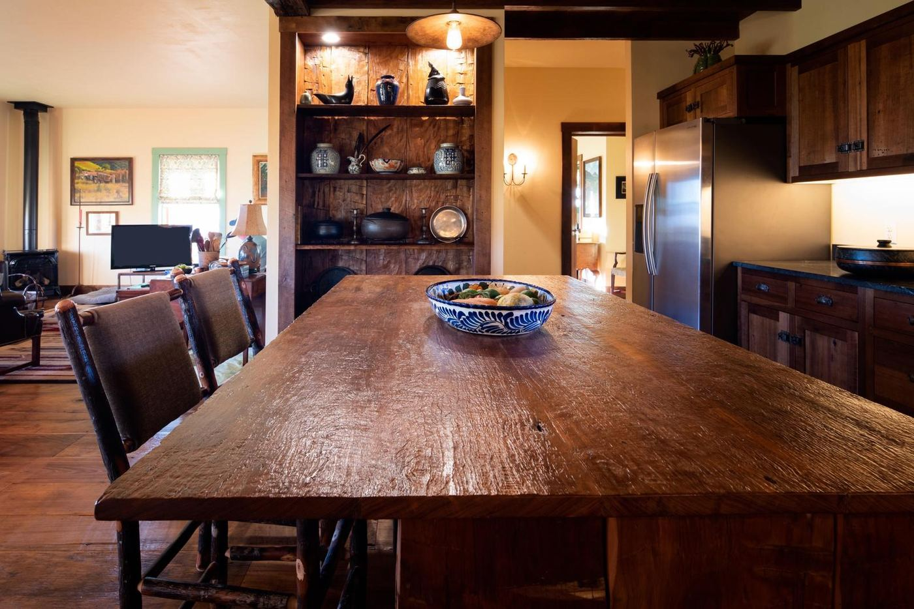
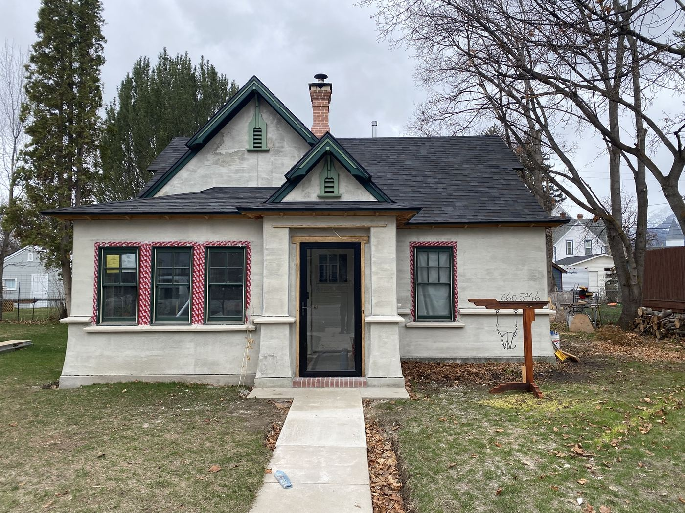
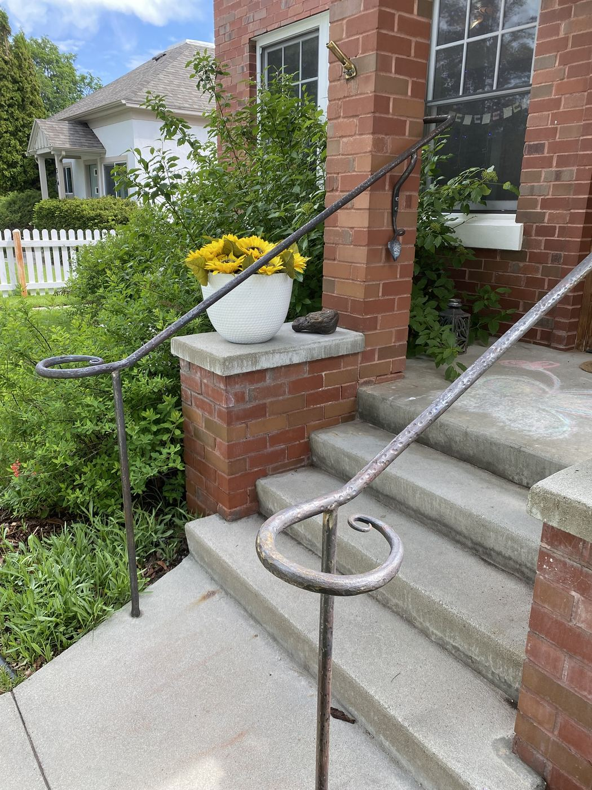

Building America for 30+ years. New construction, remodels, additions, custom masonry, and concrete work — serving Hamilton to Stevensville, south to Darby, MT (Bitterroot Valley).
Let's Talk Call (406) 360-5446From first sketch to final walkthrough, WTC Montana Construction handles every stage of your project.
Before the first board is cut, we sit down and turn your ideas into a real, buildable plan — layout, budget, and permitting sorted out up front so there are no surprises once work starts.
Learn more →From a bare lot to a finished custom home, we handle the full build — scheduling, budgeting, and contracting — so you have one point of contact from ground-breaking to move-in.
Learn more →Remodels and additions are where 30+ years in the field really pays off. Whether it's a kitchen bump-out or a full second story, we know how to work around an occupied home without turning your life upside down.
Learn more →Routine upkeep prevents small issues from becoming expensive repairs. From seasonal maintenance to one-off fixes, we help keep your home's systems and structure in good shape year-round.
Learn more →Concrete work done right the first time — foundations, driveways, walkways, and flatwork, built to hold up through Montana winters.
Learn more →A look at work completed around Hamilton, Stevensville, Corvallis, and the rest of the Bitterroot Valley.

A shabby-chic custom home built from 200-year-old reclaimed wood, start to finish.

A dated exterior rebuilt with new dormers, a new roof, and a finished stucco exterior.

A custom scrollwork handrail, forged by hand from raw steel stock in our own shop.
“We are loving our kitchen and extra mudroom space and are really pleased with the whole project. Thanks!”
“Reliable, knowledgeable, and the work exceeded my expectations. Would not hire anyone else. Top notch!”
“Every detail was thoughtfully executed. We're thrilled with the outcome.”
Serving Hamilton to Stevensville, south to Darby, MT (Bitterroot Valley).